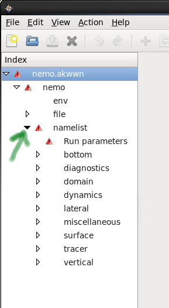
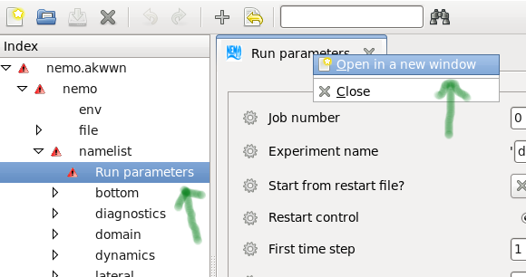
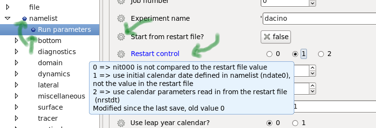
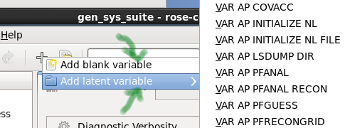
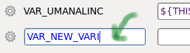
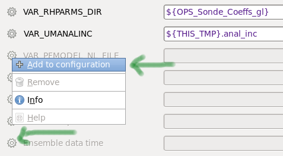
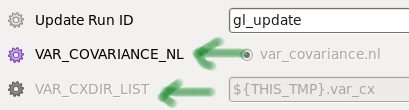
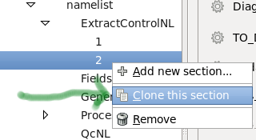

This document is released under the Open Government Licence.
Latest major update: 27 September 2012.
In a suite or application directory, run:
rose config-edit
or point the config editor to a directory using -C:
rose config-edit -C ~/my_suites/this_suite
A page is a collection of settings on a single panel. Unless overridden in the metadata, each page represents a section in the configuration.
Use the left hand panel to explore the tree of pages. Left click the triangles to expand the tree, right click them to expand everything.
Left click on the page name to open it as a tab in the main (right hand) panel. Middle click to open a page as another tab (as in Firefox). You may right click on the tab label (at the top of the tab) to open a menu, and select Open in New Window to detach the tab to a separate window.

| The arrow points to the 'expander' triangles that expand the list of available pages. You can left or right click here. |

| The arrows in the figure point to (left to right) opening a page as a tab (left or middle click) and opening a tab in a new window (right click on tab label). |
Hovering over the setting name or title, or clicking it, will give more information about the setting if it is available.
Use the right hand side widget, next to the setting name or title, to alter the value of the setting. This should flag the setting as modified (blue name or title text). It should also flag the page name with a blue icon in the left hand tree panel.
You can remove the setting or toggle the commenting-out of the setting using the menu button on the left hand side of the setting name or title. This menu will also hold help information if it is available.

| The arrows point to (left to right) the changed icons in the tree panel, a menu button, and the name of a modified setting. |
You can add a setting by selecting the Add button on the toolbar. You can then choose between adding a blank variable (a new setting with no metadata specification) or adding from a list of available settings for this page. If you choose a blank variable, you must then enter the name when the widget appears, using the entry box next to the menu button.
Alternately, you can view a list of available settings for the page by selecting View -> View Latent from the menu. You can then add them using their menu buttons (left hand widget next to the name or title).

| The arrows in the figure point to the options in the add menu. |

| The arrow points to the entry box that is used to give the new variable a name. |

| The arrows in the figure highlight (top to bottom) the menu that can be used to add a latent setting, and the menu button that launches it. |
Settings can be found using the Find entry box in the toolbar, which searches for a title, name, or value that matches the regular expression you entered. For example, to search for a setting whose name startswith 'l' and ends with 'rad', enter
^l.*rad$
in the dialog box and press enter (or use the Find Next button).
To ignore case, pass the Python modifier (?i) before the
rest of the expression:
(?i)^l.*rad$
Some settings are hidden by default - these can be shown using the View menu. View Fixed shows the settings that are only allowed to have one value according to the metadata. View Ignored shows the settings that are currently 'commented-out'.

| The figure shows (from top to bottom) a 'normal' variable, a 'fixed' variable, and an 'ignored' variable. |
Navigate to the part of the tree (left hand tree panel) where you wish to add a section and right click on one of the names. Choose Add section and type in the name in the dialog. You can then add settings to the section in the normal way.
Some sections are effectively duplicates of one another (e.g. numbered same-name namelists). To speed up copying these sections, you can right click on their page name in the left hand tree panel and select 'Clone section'.

| The arrow points to the menu option that copies this page into a new one. |
Right click on the part of the tree (page name in the left hand tree panel) that you want to remove and click Remove. This will remove all the settings belonging to the page and any child pages from the tree and configuration.
Page help can be accessed using either the left hand tree panel (right click on the page name) or the tab/page label (right click).
You can undo your changes by pressing Undo on the toolbar, or by clicking the Revert page to last save button on the toolbar. Similarly, you can redo them by pressing Redo.
Use the File->Save or the Save button on the toolbar in the normal way. These options will be greyed out if there is no difference between the last saved state and the current one.
Themes will be picked up by default (this will be the desktop theme if you are running on a GNOME desktop) and can be altered by running
gnome-appearance-properties
There are a few hard coded colours in the config editor that should be overridden if the theme is substantially different from the standard blue widget/grey background. These live in the config_editor/__init__.py file. They can be overridden by creating a file
~/.met-um/rose.conf
in your home directory, if it doesn't already exist, and adding to it in the following way:
[config-edit] colour-valuewidget-base-selected = cyan colour-variable-text-val-env = khaki colour-variable-changed = aquamarine
These option names are lowercased, hyphen-separated translations of the constants in the config_editor/__init__.py file. Any of the colours specified there can be changed easily. The allowed colour strings are specified in the X11 rgb.txt file.
Changes are not restricted to colours - any constants in this python module can be overridden in your rose.conf file (but be careful with some of them!).